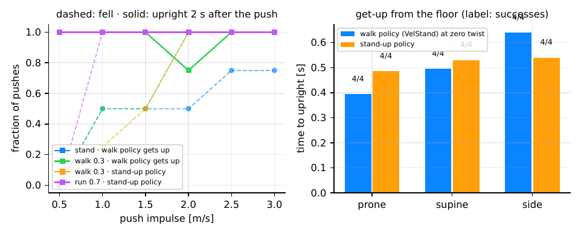
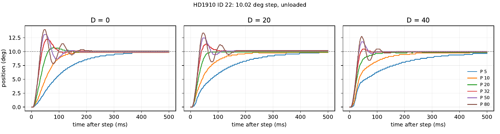

MicroDuck
Walks, sprints, flips and gets back up. On servos it was never designed for.
Seven skills. One keyboard.
Every clip is a fresh run of the current policies in Duck Live, driven by the keys lighting up below.
Hold ▲ or ▼. Tap A and D to change speed.
The numbers come from separate simulation trials, not from these clips. Each clip is one good take.
It has moods.
Head, neck and beak act out 27 emotions while the legs stay on the learned policy. Here are 19 of them.
Same duck. Slower muscles.
The original MicroDuck runs on Dynamixel XL330 servos. This one runs on Feetech HD1910s, so every skill was retrained against a model of the slower servo.

Off the screen. Iteration one.
The first hardware build, on real Feetech servos. Three clips: standing, sitting down and standing back up, and a flip.
Iteration one, filmed on the bench. These are single takes, not measured trials; the numbers on this page are still from simulation.
Measured, not promised.



The measured numbers on this page all come from simulation. The hardware clips are from iteration one of the physical build and have not been measured yet.
Built on Pollen Robotics' MicroDuck, the NVIDIA and Hugging Face Isaac Lab port, kissqy's HD1910 replica, the servo fit from LuwuDynamics and Rhoban BAM, and Thomas Burgess's jump recipe.